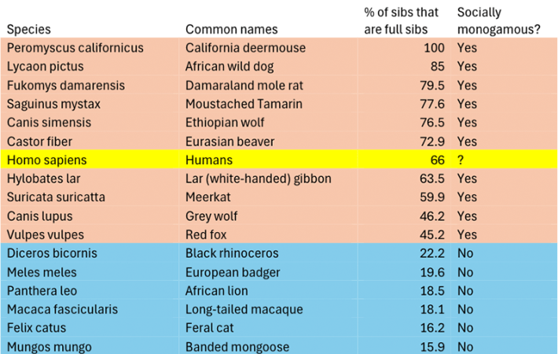

Across cultures and millennia, humans have embraced a diversity of sexual and marital arrangements—for instance, around 85 percent of human societies in the anthropological record have allowed men to have more than one wife.
But in the broader evolutionary picture, some researchers have argued that monogamy played a dominant role in Homo sapiens’ evolution, enabling greater social cooperation. This theory aligns with research on mammals, birds, and insects, which hints that cooperative breeding systems—where offspring receive care not just from parents, but from other group members—are more prevalent among monogamous species.
To decipher how monogamous humans actually have been over our evolutionary history, and compare our reproductive habits to other species, University of Cambridge evolutionary anthropologist Mark Dyble collected genetic and ethnographic data from a total of 103 human societies around the world going back 7,000 years. He then compared this against genetic data from 34 non-human mammal species. With this information, Dyble traced the proportion of full versus half siblings throughout history and across all 35 species—after all, higher levels of monogamy are linked with more full siblings, while the opposite is true in more polygamous or promiscuous contexts.
This is “a direct, theoretically salient, but relatively overlooked approach” to understanding specific mating systems, he wrote in a new paper, which was published in Proceedings of the Royal Society B.

SIBLING RIVALRY: Dyble determined monogamy rankings across 35 species. Image by Dyble, M. Proceedings of the Royal Society B 2025.
Dyble estimated the proportions of half and full siblings in these populations and fed the genetic information into a model that calculated a monogamy rating for each population. This enabled him to compare various species.
On a list descending from most to least monogamous, the California deermouse claimed the top spot, with 100 percent of siblings estimated to be full siblings. Meanwhile, humans came in seventh place, with 66 percent of siblings estimated to be full siblings—below the Eurasian beaver but above the white-handed gibbon.
“There is a premier league of monogamy, in which humans sit comfortably, while the vast majority of other mammals take a far more promiscuous approach to mating,” Dyble said in a statement, comparing the rankings to those of a professional soccer league in England.
This suggests that, despite the mix of marriage and mating arrangements throughout human history, we seem to collectively display higher levels of monogamy than most of the animals tracked in the study. Meanwhile, our primate relatives mostly sit near the bottom of the list, including several species of macaque monkeys and the common chimpanzee.
Read more: “Casual Sex May Be Improving America’s Marriages”
The list ranks humans high among species known to be socially monogamous, but we display some key differences from these animals. For instance, we only birth up to a few offspring per pregnancy, rather than entire litters, and live in social groups where multiple females have children. Dyble thinks human monogamy emerged from non-monogamous group-living, an unusual transition in the animal kingdom that might owe to different evolutionary pressures faced by humans compared with other species.
While these findings are a rough estimate of monogamy among species, and only examine a small slice of the vast numbers of species on Earth, Dyble thinks they provide solid evidence that this lifestyle was essential for human evolution—it helped spark large family networks that “provided the first step in building large-scale societies and networks of cultural exchange that have been crucial to our success as a species,” he wrote. 
Enjoying Nautilus? Subscribe to our free newsletter.
Lead image: NatalyaDDD / Shutterstock